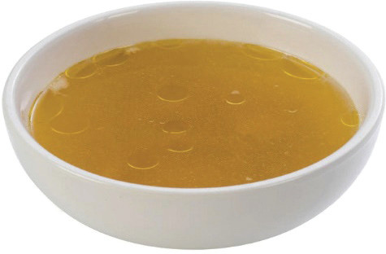

Exercise 5.3.
Keneth needs to prepare vegetable soup for his friends.
Advise him on the following:
(i) The type of vegetables he can use;
(ii) The type of flavouring he can use;
(iii) Suitable method for preparing the soup;
(iv) The importance of the selected cooking method;
(v) The ingredients needed; and
(vi) Appropriate time for its consumption.
Classification of soups
Soups can be broadly classified into four classes, namely thin, thick, cold and international soups. These are described as follows:
Thin soups
Thin soups are prepared without a thickening agent. They may be served plain or garnished with solid ingredients such as vegetables, fish, pasta, and meat. Thin soups can be strained or unstrained. They include clear soup, broth and consommé.
Clear soup: This is a clear, transparent and flavoured soup. It can be made from poultry, beef or vegetables. It has no solid ingredients because it is strained after preparation. The soup is thin like liquid. This soup is simple to prepare. Figure 5.16 shows clear soup.

119